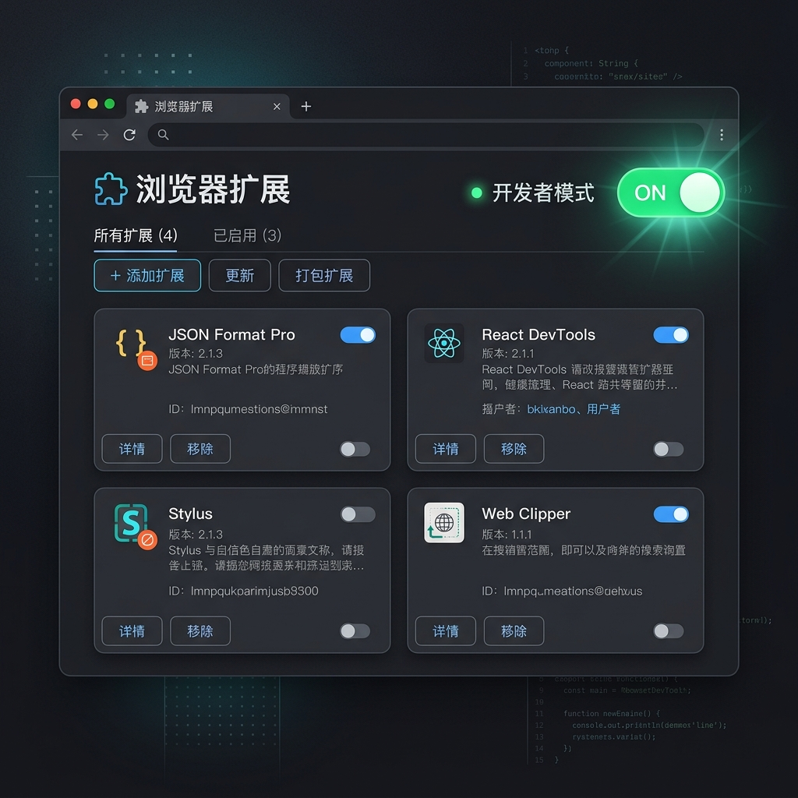
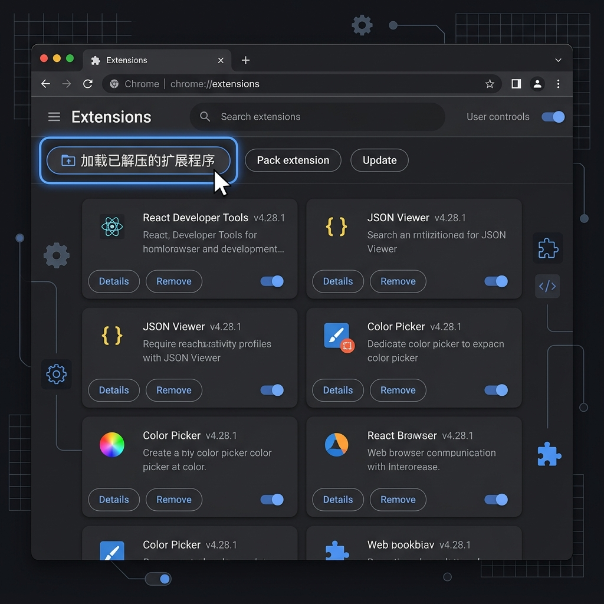

In daily computer usage, we often find ourselves working in one software (like writing code) while watching videos or reading content in the background.
Limitations of Traditional Media Keys: Traditional keyboard media keys only support Previous, Next, and Play/Pause. They cannot control playback progress (fast forward/rewind). If you get distracted and want to rewind a few seconds, you have to interrupt your work, switch window focus to the browser, drag the progress bar manually, and switch back. This heavily breaks your flow and concentration.
Feature of This Plugin: Without switching window focus or interrupting your work, you can fine-tune the playback progress (rewind, fast-forward, and play/pause) of background browser videos directly using the physical Ulanzi Deck buttons or dials, helping you stay fully focused.
Since this plugin controls video playback inside browser pages, it must be paired with a light extension.
Click the [Install Config] button in the Ulanzi property inspector panel (or manually go to the scripts folder in the plugin directory and run install.cmd as administrator). This script automatically registers the plugin to the Native Messaging white list, enabling secure communication with the browser extension.
Locate and turn on the "Developer mode" toggle on the extensions page.

Click the "Load unpacked" button, and select the chrome-plugin folder located in the root directory of the plugin.

Click the extension icon in the browser toolbar to check the status:
Open any video site supporting HTML5 player (e.g. YouTube, Bilibili, etc.).
After entering the video page, you must click play on the video page once manually. The browser needs this action to identify the active video target. Once played, even if paused later, control remains active.
Press the buttons or turn the dials you configured on your Ulanzi Deck, and see if the background web video responds to fast-forward, rewind, and play/pause controls!